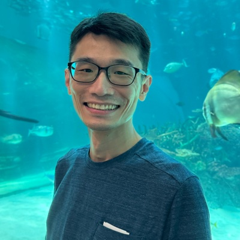

Ching-Heng Lin林敬恒
Assistant Professor, Master's Program in Medical Informatics, National Tsing Hua University
Principal Investigator, Intelligent Health Sciences Lab
Email: chlin@life.nthu.edu.tw
Specialties
Experience
2021–present
Honors and awards
2021–present
Publications and patents
2021–present. # co-first author, * corresponding author.
For the full CV, see the NSTC page (in Chinese).